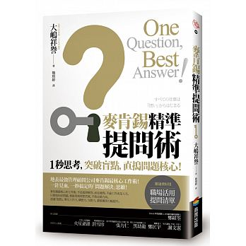

「重要的是，不要停止發問。」― 阿爾伯特 · 愛因斯坦
此書主要在描述，人有許多的煩惱，焦躁不安、缺乏靈感、缺乏認同、陷入僵局時，能夠透過提問一掃心中的煩惱。
人的大腦是一部很神奇的機器，一旦提問，有意識的、無意識的思考便會自主展開。
也能夠透過提問釐清問題的核心，確實的理解問題發生的根源，而不是被不是問題的問題所綑綁。
「如果我有一小時能拯救世界，我會花五十五分鐘想問題，最後再用剩餘的五分鐘想解答。」― 阿爾伯特·愛因斯坦
愛因斯坦的這句話，讓我們明白在看待問題時，必須深入剖析了解，處理問題之前，越是重要的問題，越該提問：「什麼才是真正的問題所在？」
現在的我們擁有過多的既有知識、常識、理所當然的認知，因此難以重新「提問」。
想當然爾，這些理所當然的認知，若就此照單全收，將不會帶來任何變化，無法冒出有趣的構想和新穎的創意。
基本概念隨時在改變，目前存在我們周遭的基本概念，未必永遠正確。
正因為身處這種資訊瞬息萬變的時代，所以更需要經常「提問」。
透過各種搜尋引擎的蓬勃發展，取得資訊只需要一眨眼的功夫，但如果只以搜尋結果就此決定後續動作的「依據」，從中產生的可能性也會有所侷限。
針對「理所當然」抱持合理懷疑，並透過「提問」啟動腦部思考，最後以「搜尋」並「提問」擴大可能性。
「高素質的問題，能開創高品質的人生。」― 安東尼 · 羅賓斯
貼近本質的提問，所謂貼近本質，就是認知事物的根本意義。只要掌握本質，便能快狠準的輕易解決問題，也比較容易展現成果。
提問「一句就好」
人腦具有一種特性，「提問」越單純，將有越多的突觸（腦神經細胞的接頭）反應活躍，進而激盪出意想不到的跳躍式思考。
「一句提問」，能夠將提問簡單化，無論如何都能聚焦到重要的事情上。如果能察覺對於目前的自己什麼才重要的話，便能割捨其他多餘的事物，將焦點放在最重要的事情上
切勿妄下評斷
提問時，若摻入「評斷」和「誘導」，容易引起對方的反彈。反之，要輕易地進入對方內心，同時一掃對方心中的迷惘，促使對方變得積極進取，才可以稱為「好問題」。
改變視角的高度
視野是「觀察哪個範圍」，視角是「基於什麼樣的立場加以觀察」。
針對同一件事，可以從「經營者」、「用戶」、「年輕族群」、「當事人」等各種視角嘗試提問，而不是只基於自己的視角，來鍛鍊自己的「提問」思路。
心態轉為正面積極
PMA 黃金定律 (Positive Mental Attitude 積極心態)
「最重要的五個問題，就是我們的使命為何？我們的顧客是誰？顧客在乎什麼？我們追求什麼成果？我們的計劃為何？這五個問題，正是經營的工具。」― 彼得 · 杜拉克
洞悉狀況
以 5W 確認狀況
建立假設
被動反應型：針對眼前所見事物予以因應或思考
先發制人型：建立自我假設，針對「未表面化的問題」提問
PDCA 循環「(Plan (計畫) → Do (執行) → Check (檢查) → Act (行動)」
Plan：思考問題點
Do：提出假設
Check：驗證假設
Act：修正假設，付諸行動